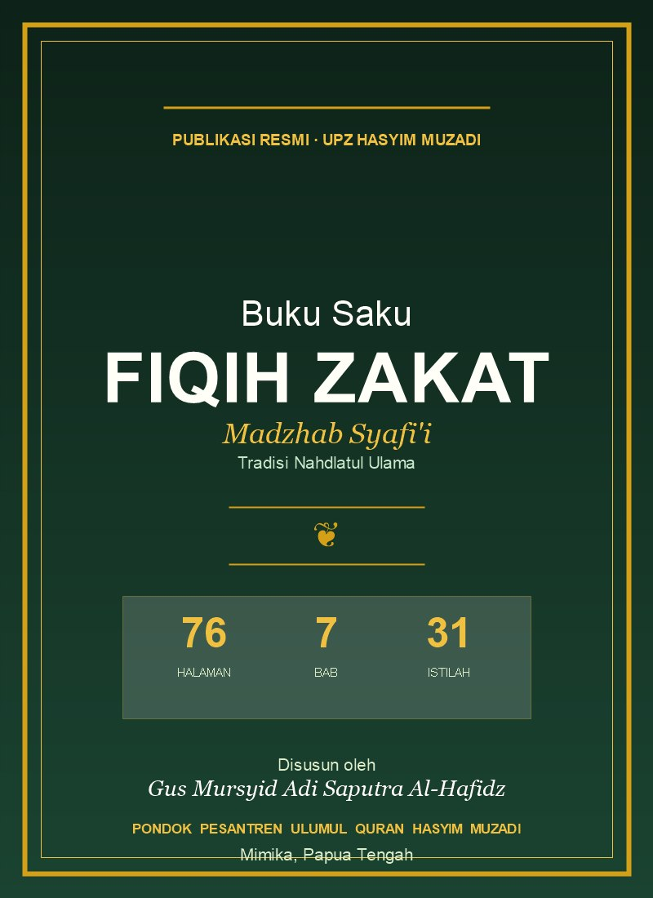

Publikasi PPUQHM
PPUQHM Terbitkan Buku Saku Fiqih Zakat Madzhab Syafi'i, Tersedia Gratis untuk Umat
UPZ Hasyim Muzadi PPUQHM merilis panduan ringkas fiqih zakat madzhab Syafi'i tradisi NU — 76 halaman, 7 bab, lengkap dengan dalil Arab dan terjemahan. Bebas dibagikan kepada keluarga, jamaah, dan umat Aswaja.
📅 Kamis, 14 Mei 2026
•
📍 PPUQHM Mimika
•
✍️ Redaksi PPUQHM

Cover Buku Saku Fiqih Zakat Madzhab Syafi'i — Tradisi NU, disusun oleh Gus Mursyid Adi Saputra Al-Hafidz.
Pondok Pesantren Ulumul Qur'an Hasyim Muzadi (PPUQHM) Mimika melalui UPZ Hasyim Muzadi resmi menerbitkan Buku Saku Fiqih Zakat Madzhab Syafi'i — sebuah panduan ringkas namun komprehensif tentang fiqih zakat dalam tradisi Ahlussunnah wal Jama'ah An-Nahdliyah. Buku ini tersedia gratis dalam format PDF dan terbuka untuk dibagikan kepada seluruh umat Muslim.
Buku ini ditulis dengan gaya klasik pesantren NU, disusun secara sistematis dengan merujuk kepada kitab-kitab fiqih klasik karya ulama Syafi'iyyah seperti Al-Umm karya Imam Asy-Syafi'i, Al-Majmu' karya Imam An-Nawawi, Fathul Mu'in karya Syaikh Zainuddin Al-Malibari, Al-Iqna' karya Imam Asy-Syirbini, hingga Bughyatul Mustarsyidin dan kitab-kitab lain yang menjadi pegangan pesantren NU di Indonesia.
Buku saku ini dimaksudkan menjadi referensi praktis bagi keluarga besar pesantren, walisantri, jamaah pengajian, karyawan/profesional Mimika, serta umat Muslim Ahlussunnah wal Jama'ah di tanah Papua dan sekitarnya.
📑 Daftar Isi Buku
Pembahasan disusun dalam 7 bab utama, ditambah 3 lampiran praktis untuk memudahkan pembaca menghitung dan menunaikan zakat secara tepat:
👥 Cocok untuk Siapa?
Buku ini didesain agar bisa dipahami dari kalangan awam hingga pengurus dakwah:
- Walisantri PPUQHM — panduan keluarga dalam menunaikan zakat
- Jamaah pengajian rutin — materi belajar fiqih ibadah
- Karyawan/pegawai Mimika — yang ingin paham zakat profesi sesuai gaji
- Pengurus pesantren & dakwah — referensi mengajar zakat
- Mahasantri PPUQHM — materi pengantar fiqih zakat
- Muzakki (pemberi zakat) — yang ingin menunaikan zakat dengan benar
- Amil/UPZ daerah — pedoman pengelolaan zakat
- Setiap Muslim Aswaja — yang ingin menambah ilmu fiqih
✍️ Tentang Penyusun
📞 Tunaikan Zakat Anda di UPZ Hasyim Muzadi
UPZ Hasyim Muzadi adalah Unit Pengumpul Zakat resmi di bawah PPUQHM, didedikasikan untuk pengelolaan zakat, infaq, dan shadaqah yang amanah dan profesional di wilayah Mimika dan sekitarnya.
🏛️ Alamat:
Pondok Pesantren Ulumul Qur'an Hasyim Muzadi
Karang Senang SP-3, Kuala Kencana
Mimika, Papua Tengah
🕌 Layanan: Penerimaan Zakat Fitrah · Zakat Mal · Zakat Profesi bulanan · Infaq & Shadaqah · Konsultasi fiqih zakat · Distribusi tepat sasaran ke mustahiq Mimika.
💬 Chat UPZ via WhatsApp (0857-1606-7467)